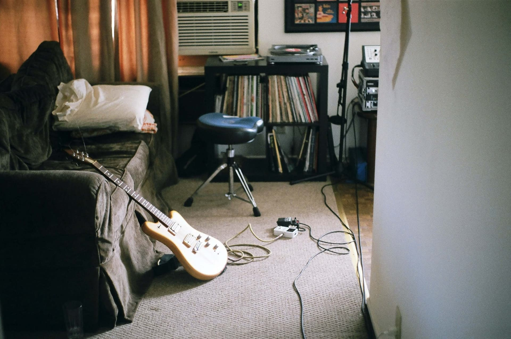

Entdecke alle Instrumente, die du bei uns lernen kannst:
Gitarre, Klavier, Schlagzeug, Ukulele und E-Bass!

Gitarre / E‑Gitarre
Der Allrounder von Lagerfeuer bis Bühne. Akustik für Songbegleitung und E‑Gitarre für vielseitige Sounds – von clean bis verzerrt. Ideal für Einsteiger und Fortgeschrittene, die kreativ werden wollen.
Mehr zum Gitarrenunterricht in Karlsruhe – kostenlose Probestunde vereinbaren.
Ukulele
Vier Saiten, schneller Erfolg: handlich, leicht zu greifen und sofort motivierend. Perfekt für Kinder und Erwachsene – von Pop bis Island‑Vibes.
Mehr zum Ukulele‑Unterricht in Karlsruhe – kostenlose Probestunde.

Schlagzeug
Herzschlag der Band: Beats, Dynamik und Energie. Akustik‑Set für Bühne, E‑Drums für leises Üben – beides macht richtig Spaß und schult Koordination.
Mehr zum Schlagzeugunterricht in Karlsruhe – Probestunde anfragen.
E-Bass
Das Fundament jeder Band: satter Ton, klares Timing und Groove. Einsteigerfreundlich mit 4 Saiten – ideal, um Rhythmus und Band‑Feeling zu lernen.
Mehr zum Bassunterricht in Karlsruhe – kostenlose Probestunde.

Klavier / Keyboard
Das Fundament jeder Band: satter Ton, klares Timing und Groove. Einsteigerfreundlich mit 4 Saiten – ideal, um Rhythmus und Band‑Feeling zu lernen.
Mehr zum Klavierunterricht in Karlsruhe – Probestunde vereinbaren.